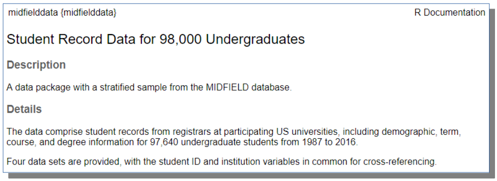
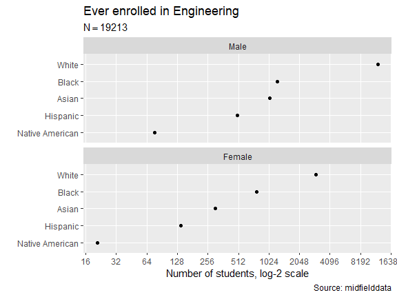

Undergoing major revision
Based on feedback from workshop attendees, the package is undergoing major revision to the vignettes and the underlying functionality.
While in this ambiguous state, the package should be used experimentally only. We hope to have the update complete by the end of August 2020.
Tools for student records research
MIDFIELD—the Multiple-Institution Database for Investigating Engineering Longitudinal Development—is a partnership of US higher education institutions with engineering programs (link). As of June, 2020, MIDFIELD contains registrar’s population data for 1.7M undergraduates at 19 institutions from 1987–2019. The data are organized in four related tables: students, courses, terms, and degrees. A sample of the MIDFIELD data is provided by the midfielddata package.
midfieldr is an R package that provides tools specialized for the midfielddata sample data set.
midfielddata is an R package that provides a stratified sample of the MIDFIELD population data set. The sample contains data for 97,640 undergraduates at 12 institutions from 1987–2016 (link).
For members of MIDFIELD partner institutions: data dictionaries for midfielddata are a subset of those for MIDFIELD. When creating midfielddata, some MIDFIELD variables were omitted and some were re-coded to preserve confidentiality. In general, however, scripts written for the midfielddata sample data set will work for the MIDFIELD population data set.
Installation
Install midfielddata first.
Because of its size, the data package is stored in a drat repository. Installation takes time; please be patient and wait for the Console prompt “>” to reappear.
# install midfielddata first install.packages("midfielddata", repos = "https://MIDFIELDR.github.io/drat/", type = "source")
To confirm a successful installation, run the following to view the data package help page. A portion of the help page is shown below.
library(midfielddata) ? midfielddata

Once the midfielddata installation is confirmed successful, install midfieldr. The package should be submitted to CRAN by September 2020.
# install from CRAN (when available) # install.packages("midfieldr") # or install the development version from GitHub (available now) # install.packages("devtools") devtools::install_github("MIDFIELDR/midfieldr")
Data
The midfieldr package includes:
-
cipA data frame with 1584 observations and 6 CIP variables of program codes and names at the 2, 4, and 6-digit levels. Each observation is a unique program keyed by a 6-digit CIP code. Occupies 379.9 kB of memory. Data dictionary (link).
The midfielddata package contains the four datasets that comprengr a stratified sample of the MIDFIELD database.
midfieldstudentsA data frame with 97,640 observations and 15 demographic variables. Each observation is a unique student keyed by student ID. Occupies 19 MB of memory. Data dictionary (link).midfieldcoursesA data frame with 3.5 M observations and 12 academic course variables keyed by student ID, term, and course. Each observation is one course in one term for one student. Occupies 348.5 MB of memory. Data dictionary (link).midfieldtermsA data frame with 727,369 observations and 13 academic term variables keyed by student ID and term. Each observation is one term for one student. Occupies 81.8 MB of memory. Data dictionary (link).midfielddegreesA data frame with 97,640 observations and 5 graduation variables keyed by student ID. Each observation is a unique student. Occupies 10.2 MB of memory. Data dictionary (link).
Usage
data manipulation ecosystem We use base R in the examples. A user who prefers a dplyr or data.table ecosystem should find the translation to be straightforward.
data frames midfieldr functions do not preserve data frame extensions such as tibble or data.table. Data frames returned by midfieldr functions are always base R data.frame objects.
graphs We use ggplot2 in the examples. A translation to lattice or base R graphics should be easily managed by users familiar with those systems.
midfieldr functions are designed to work with MIDFIELD-structured data to access and manipulate student records. A typical workflow might include:
-
get_cip()search the CIP data set for program codes
-
label_programs()isolate and label specific programs to study
-
get_enrollees()gather students ever enrolled in the programs -
feasible_completion()subset students for 6-year completion feasibility -
get_race_sex()obtain student sex and race/ethnicity -
order_multiway()condition multiway data for graphing
examples A complete example that starts with program selection and concludes with a persistence metric is given in the vignette (“Using midfieldr”).
A short example below illustrates applying of some of these functions. Suppose we want to graph the number of students ever enrolled in Engineering, grouped by sex and race/ethnicity, for whom graduation is feasible within the range of data available.
We start with the CIP code—Engineering CIPs start with 14. get_cip() accesses the cip dataset.
# packages used library(midfieldr) library(ggplot2) # gather the program CIPs engr_cip <- get_cip(keep_any = "^14") engr <- label_programs(data = engr_cip, label = "Engineering") # examine the result str(engr) #> 'data.frame': 56 obs. of 3 variables: #> $ cip6 : chr "140101" "140102" "140201" "140301" ... #> $ cip6name: chr "Engineering, General" "Pre-Engineering" "Aerospace, Aeronautical and Astronautical, Space Engineering" "Agricultural, Biological Engineering and Bioengineering" ... #> $ program : chr "Engineering" "Engineering" "Engineering" "Engineering" ...
get_enrollees() accesses the midfieldterms dataset using the engr 6-digit CIP column to obtain the IDs of all students ever enrolled in these programs.
# extract students ever enrolled enrollees <- get_enrollees(codes = engr$cip6) # examine the result str(enrollees) #> 'data.frame': 26042 obs. of 2 variables: #> $ id : chr "MID25783162" "MID25783166" "MID25783167" "MID25783167" ... #> $ cip6: chr "14XXXX" "14XXXX" "14XXXX" "140901" ...
feasible_completion() accesses the students, terms, and degrees datasets to filter for feasible program completion within the limits of the data.
# apply the feasible completion filter ids_we_want <- feasible_completion(id = enrollees$id) rows_we_want <- enrollees$id %in% ids_we_want enrollees <- enrollees[rows_we_want, , drop = FALSE] # examine the result str(enrollees) #> 'data.frame': 19970 obs. of 2 variables: #> $ id : chr "MID25783162" "MID25783178" "MID25783178" "MID25783178" ... #> $ cip6: chr "14XXXX" "14XXXX" "140701" "143501" ...
get_race_sex() accesses the midfieldstudents dataset using the enrollees IDs.
# get student demographics demographics <- get_race_sex(keep_id = ids_we_want) # examine the result str(demographics) #> 'data.frame': 14241 obs. of 3 variables: #> $ id : chr "MID25783162" "MID25783178" "MID25783197" "MID25783259" ... #> $ race: chr "White" "Black" "White" "White" ... #> $ sex : chr "Male" "Male" "Male" "Male" ...
To the working data frame, join the student race/ethnicity and sex and the program names.
# join demographics and program labels to working data frame enrollees <- merge(enrollees, demographics, all.x = TRUE) enrollees <- merge(enrollees, engr, all.x = TRUE) # examine the result str(enrollees) #> 'data.frame': 19970 obs. of 6 variables: #> $ cip6 : chr "140101" "140101" "140101" "140101" ... #> $ id : chr "MID26523480" "MID25942292" "MID25976639" "MID26239077" ... #> $ race : chr "White" "White" "White" "White" ... #> $ sex : chr "Male" "Male" "Female" "Male" ... #> $ cip6name: chr "Engineering, General" "Engineering, General" "Engineering, General" "Engineering, General" ... #> $ program : chr "Engineering" "Engineering" "Engineering" "Engineering" ...
Group and summarize by race/ethnicity and sex.
# initialize the summarizing column enrollees$ever <- 0 # group and summarize grouped_enrollees <- aggregate(ever ~ race + sex, data = enrollees, FUN = function(x) ever = sum(!is.na(x)) ) # examine the result grouped_enrollees #> race sex ever #> 1 Asian Female 302 #> 2 Black Female 775 #> 3 Hispanic Female 138 #> 4 International Female 56 #> 5 Native American Female 21 #> 6 Other Female 51 #> 7 Unknown Female 23 #> 8 White Female 2985 #> 9 Asian Male 1045 #> 10 Black Male 1241 #> 11 Hispanic Male 498 #> 12 International Male 346 #> 13 Native American Male 76 #> 14 Other Male 229 #> 15 Unknown Male 52 #> 16 White Male 12132
Prepare data for graphing.
# remove ambiguous levels of race/ethnicity pre_mw <- grouped_enrollees rows_we_want <- !pre_mw$race %in% c("International", "Other", "Unknown") pre_mw <- pre_mw[rows_we_want, , drop = FALSE] # complete the transformation to multiway form columns_we_want <- c("race", "sex", "ever") pre_mw <- pre_mw[, columns_we_want, drop = FALSE] # examine the result str(pre_mw) #> 'data.frame': 10 obs. of 3 variables: #> $ race: chr "Asian" "Black" "Hispanic" "Native American" ... #> $ sex : chr "Female" "Female" "Female" "Female" ... #> $ ever: int 302 775 138 21 2985 1045 1241 498 76 12132
order_multiway() converts the categorical variables to factors and orders the levels by the median of the quantitative variable.
data_mw <- order_multiway(pre_mw) # examine the result str(data_mw) #> 'data.frame': 10 obs. of 3 variables: #> $ race: Factor w/ 5 levels "Native American",..: 3 4 2 1 5 3 4 2 1 5 #> $ sex : Factor w/ 2 levels "Female","Male": 1 1 1 1 1 2 2 2 2 2 #> $ ever: num 302 775 138 21 2985 ... # total number of students for graph subtitle n_ever <- sum(data_mw$ever) n_ever #> [1] 19213
And we’re ready to graph the results.
ggplot(data = data_mw, mapping = aes(x = ever, y = race)) + facet_wrap(facets = vars(sex), ncol = 1, as.table = FALSE) + geom_point(na.rm = TRUE) + scale_x_continuous(trans = 'log2', breaks = 2^seq(0, 15)) + labs(x = "Number of students, log-2 scale", y = "", title = "Ever enrolled in Engineering", subtitle = bquote(N == .(n_ever)), caption = "Source: midfielddata" ) + theme(panel.grid.minor.x = element_blank())

Meta
- Data provided by MIDFIELD (link)
- Get citation information with
citation("midfieldr") - This project is released with a Code of Conduct (link). If you contribute to this project you agree to abide by its terms.